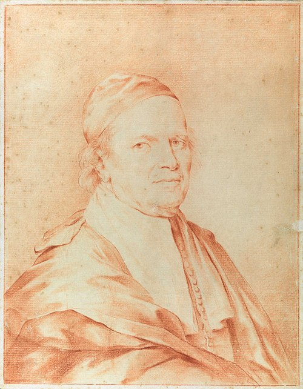

Bologna, 15 maggio 1628 – Forlì, 6 settembre 1719
Carlo Cignani fu protagonista della pittura bolognese del tardo barocco, ricordato per la sua eleganza compositiva. Citato nei manoscritti di Oretti per opere conservate in palazzi nobiliari.